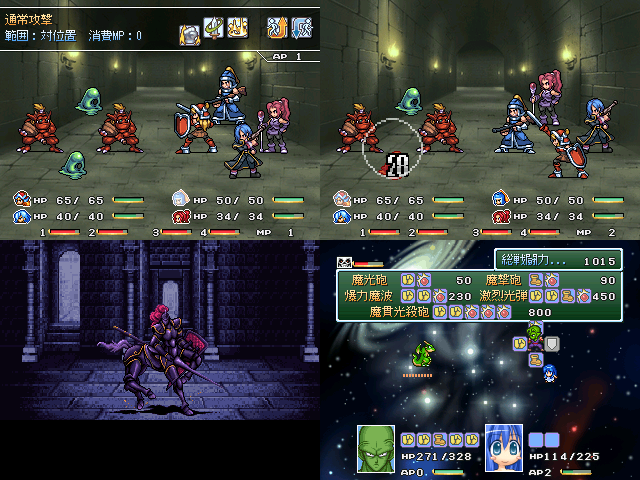

| 作者：えんがわ |
|---|
|
チュートリアルをｔｋり忘れたのでSSでやります。 今回は立ち位置を重視した4VS4のATB戦闘です。お互い、敵と味方で 対となるポジションのユニットを攻撃していくのが基本となります。 (相対するユニットが存在しなければターゲットは時計回りに転移していきます） 加えて上下キーによる陣形の変更やカスタマイズ可能な２つのスキルを 駆使して敵を全滅させればこちらの勝利です。なお、アイテムや防御はすべて スキルで補うしかないのでPTの戦術を整えることが重要となるでしょう。以上。 #セーブ画面が出てきたらこまめにセーブしといた方がいいよ。 #VIPのロゴの場面でShiftキーを押すとおまけｋｓｇが見られるよ。(決定キーで通常進行） |
| 管理人から一言 |
| 下のピッコロさんについての説明は？ |